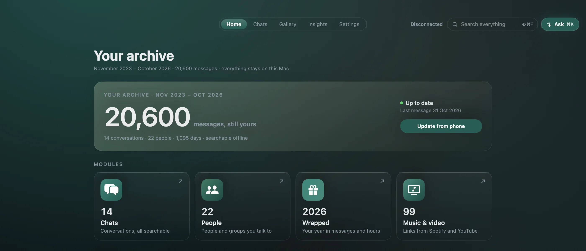

Plain files. Readable in twenty years.
A folder of open files, not an account on someone else's server. Keep it on your Mac or your own storage — Saga rebuilds search from it.
Merge every Android backup you've made into one searchable archive. Messages your phone deleted stay. Nothing leaves the Mac.
Free, open source, version 1.0.5. macOS 14+. Android backups with the 64-digit key; iPhone is experimental.

A folder of open files, not an account on someone else's server. Keep it on your Mac or your own storage — Saga rebuilds search from it.
Search across every conversation, then open the message in context. People, dates and shared media, without scrolling through years.
The shape of your archive, by year or for a single conversation. Save it as a page and share it. Open the sample.
Catch me up summarises a conversation, every point linked to its message. Ask your archive answers from the messages themselves. Both are optional and run on your Mac.
Media players and link previews contact their provider, but only when you turn them on. The full list.